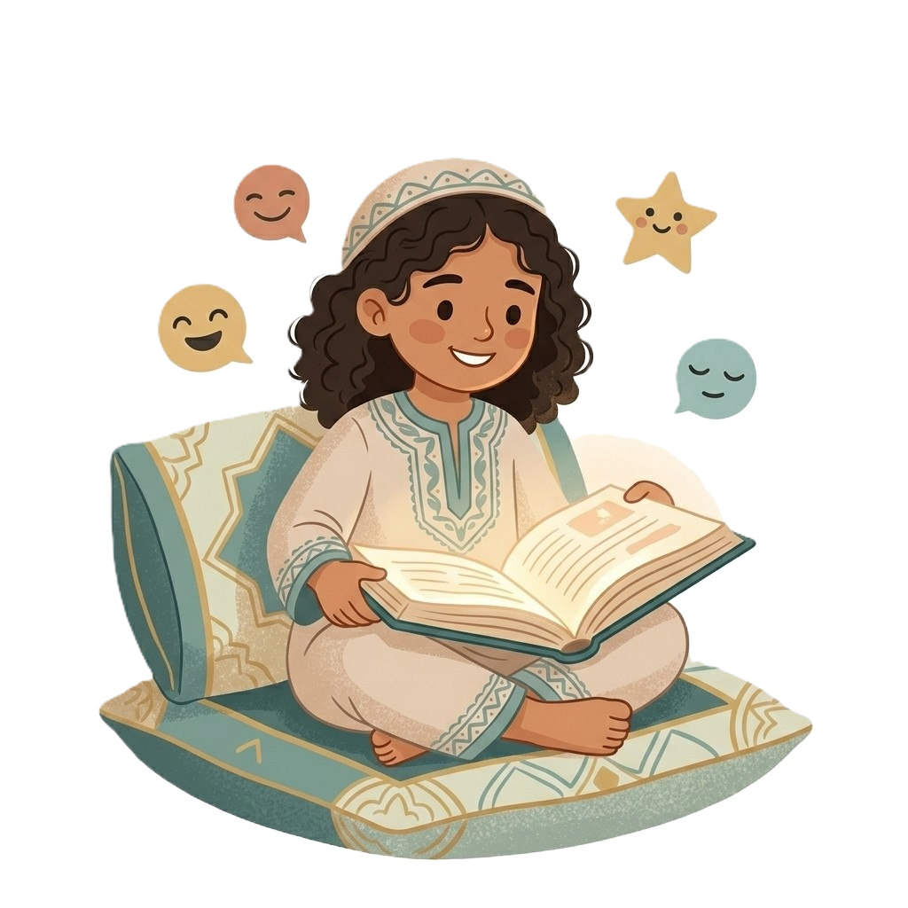

برامج تفاعلية تُنمّي الذكاء العاطفي والمهارات الاجتماعية لدى الأطفال — بأسلوب مناسب لعمرهم ومصمم لإشراك الوالدين في كل خطوة.
مسار مصمم خصيصاً للأطفال يجمع بين القصص التفاعلية، الأنشطة الموجهة، وورش تطوير المهارات الاجتماعية. نساعد طفلك على فهم مشاعره والتعبير عنها بثقة، مع تزويد الوالدين بأدوات يومية للمتابعة والتعزيز في المنزل.
احجز جلسة استكشافية لطفلك
برنامج متكامل يبني مهارات الطفل من الداخل — مشاعره، علاقاته، وقدرته على التعامل مع التحديات اليومية بثقة.
قصص مصممة خصيصاً تساعد الأطفال على فهم مشاعرهم والتعبير عنها بشكل صحي وطبيعي.
ورش عمل تفاعلية لتطوير مهارات التعامل مع المشاعر والصداقة والتعاون مع الآخرين.
محتوى إرشادي يومي يساعد الوالدين على دعم نمو طفلهم العاطفي بسهولة وفاعلية في المنزل.
مساحة محمية تماماً ومصممة خصيصاً لعمر طفلك — تشجعه على التعبير بحرية بدون خوف.
لأن الطفل في سن 5 سنوات يختلف تماماً عن سن 11 — صممنا لكل مرحلة مساراً مستقلاً يناسب قدراتها.
تعلّم بسيط وممتع من خلال القصص والألوان والألعاب — لبناء وعي الطفل بمشاعره الأساسية.
تطوير مهارات التعبير العاطفي وبناء الصداقات وحل النزاعات بأسلوب عملي مناسب للمرحلة.
تمهيد لمرحلة المراهقة — وعي بالذات، مهارات التفكير النقدي، وإدارة ضغوط المدرسة والعلاقات.
مسار واضح ومُثبت يمشي فيه الطفل والوالدان معاً لتحقيق أفضل نتائج.
نبدأ بجلسة تقييم قصيرة لفهم شخصية طفلك، اهتماماته، واحتياجاته قبل أي شيء.
يُخصَّص لطفلك مسار مناسب لعمره مع أخصائي متخصص في علم نفس الأطفال.
جلسات تفاعلية تجمع بين القصص والألعاب والتمارين النفسية بأسلوب يُحبه الطفل.
يتلقى الوالدان تقريراً أسبوعياً وإرشادات عملية لتعزيز تقدم طفلهم يومياً.
صممناه بعناية مع متخصصين في علم نفس الأطفال ليكون فعّالاً وممتعاً في آنٍ واحد.
البرنامج مصمم وفق أحدث الأبحاث في علم نفس الأطفال ونظريات الذكاء العاطفي.
أسلوب قصص وألعاب يجعل التعلم تجربة ممتعة لا يمانع الطفل من الاستمرار فيها.
نزودكم بأدوات عملية ويومية لمتابعة التطور ودعم طفلكم في البيت.
خصوصية الطفل مصانة — تصفح آمن وبيانات محمية وفق أعلى المعايير.
تقارير أسبوعية واضحة تُظهر تطور طفلك في كل محور من محاور البرنامج.
من منزلكم، في الوقت الذي يناسبكم — بدون تنقل أو ضغط إضافي.
إجابات واضحة على ما يدور في ذهنكم قبل البدء.
الذكاء العاطفي لا يتطور من تلقاء نفسه — بل يحتاج تغذية ومساحة آمنة. نحن هنا لنوفر ذلك لطفلك بطريقة تجعله يتشوق للجلسة القادمة.